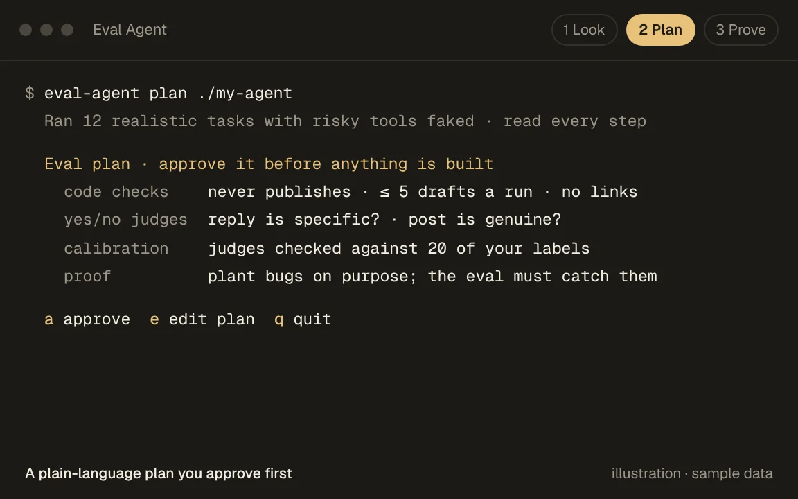

AI agents I’ve built: software that reads, decides and takes actions, with the guardrails written in code. Apps live on the Projects page.

Illustration with sample data: the plan you approve first
Eval Agent
Agent
ProblemPeople building tool-using agents know they need evals and rarely have good ones. Existing tools run test cases and draw dashboards, but leave the hard parts to you: what to measure, how to test safely when tools act in the real world, and whether the eval would catch a regression.
SolutionGive it your agent’s repo. It runs your agent, writes an eval plan anyone can understand, gets your approval, builds the eval, proves the eval works, and runs it.
StackPython · Claude Agent SDK
How it works:
Builds first, then looks: runs the agent on realistic tasks with risky tools swapped for fakes, and reads every step of every trace.
Turns objective rules into code checks, and subjective ones into yes/no LLM judges calibrated to about 20 of your labels.
Tests the eval itself before running it, so you know it catches real problems.
Nothing is built until you approve the plan, written simply enough for a 15-year-old to follow.
ProblemGrowing an account takes daily posts and replies, and knowing which ones actually start conversations.
SolutionAn agent with one goal: grow my following by starting genuine conversations. Each run, Claude reads its notes and my numbers, decides which comments to answer and what to post, and queues a few drafts. Nothing is published until I approve it.
StackPython · Claude API (tool use) · Threads API · SQLite
The limits live in code, not just in the prompt:
No tool can publish. At most 5 drafts a run, and 10 replies and 3 new posts a day, at least 5 minutes apart.
Engagement bait, follow requests, links and @mentions are rejected, and spam is never answered.
It saves notes on what works, with the numbers, and reads them at the start of the next run.
ProblemTeams forget why they made a decision, so they relitigate settled questions or quietly reverse them.
SolutionReads meeting notes and answers “why did we decide this?” Every fact has to quote the note it came from, and private notes stay out of anything you share.
StackPython · Claude API · Slack · React · Express · PostgreSQL